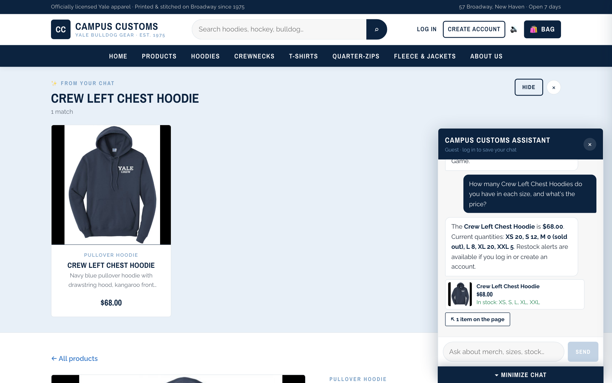
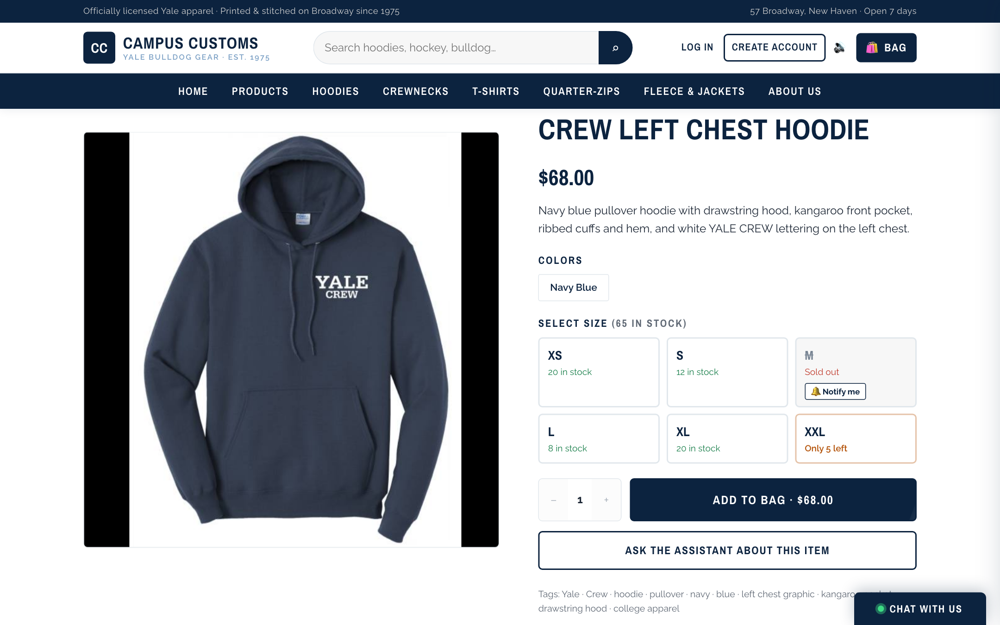
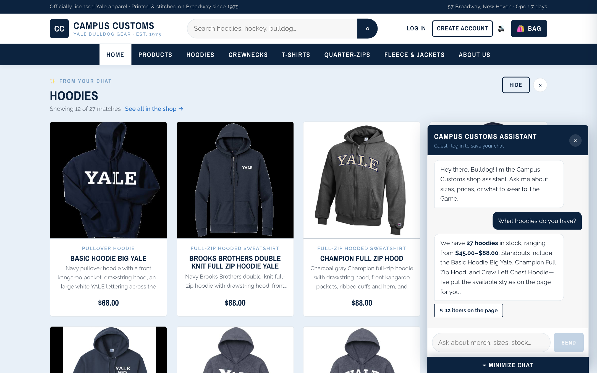
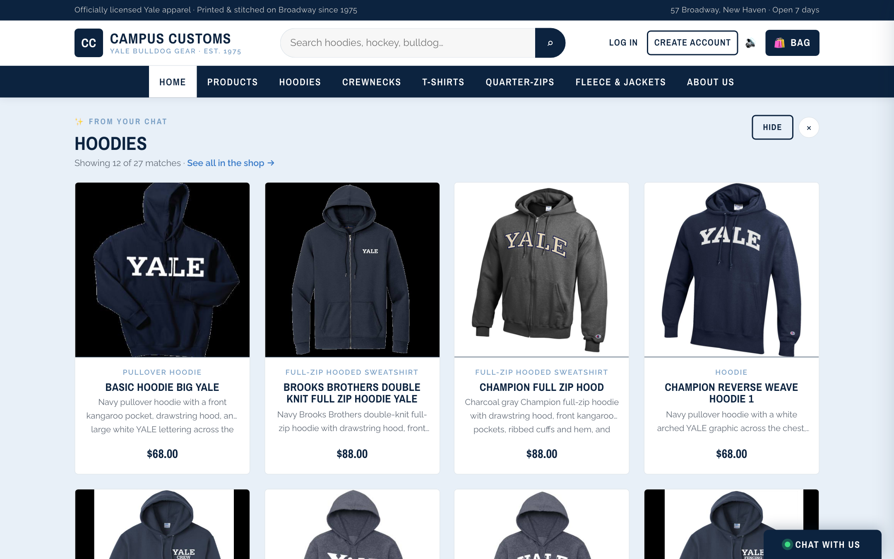
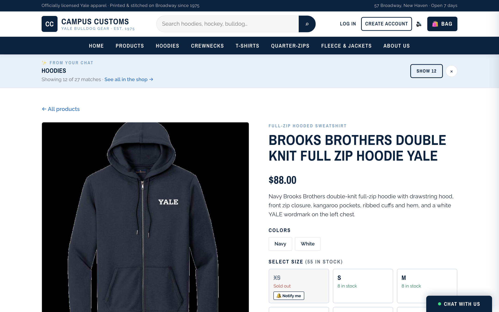
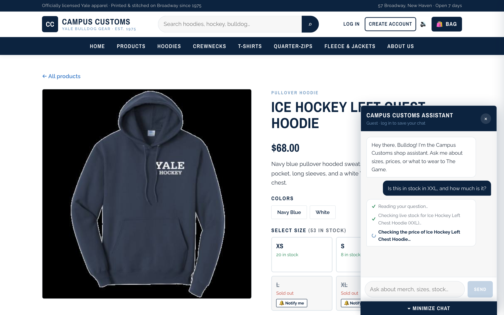
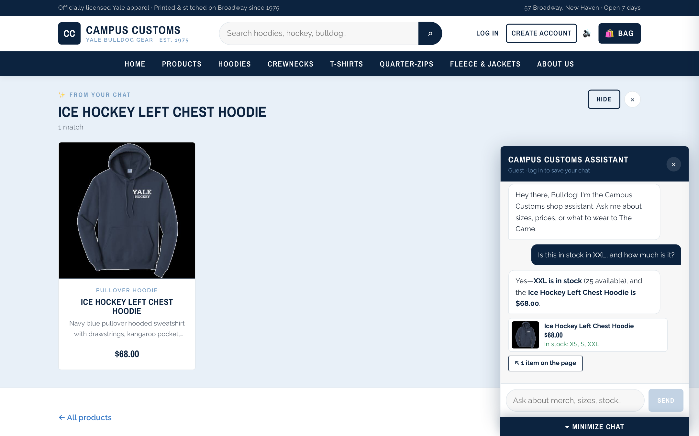
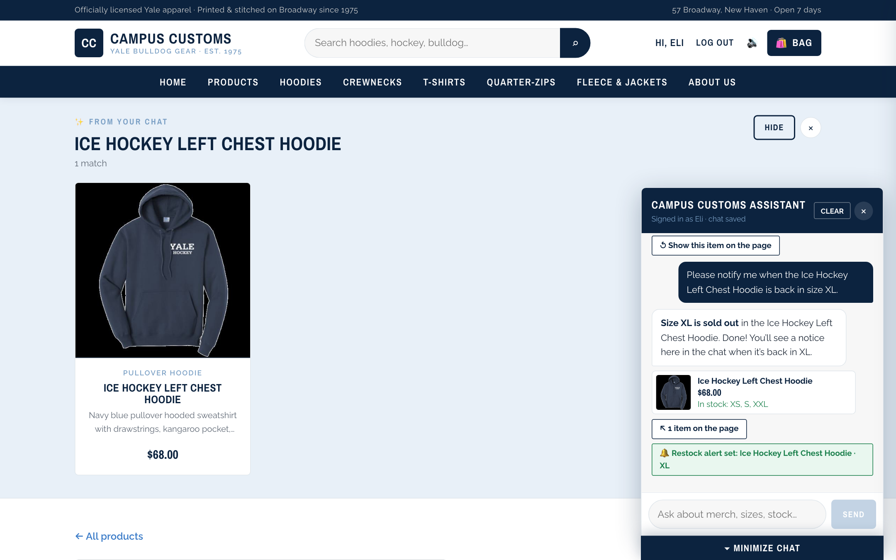

Summary
| # | Check | Result |
|---|---|---|
| 1 | Chat checks an item's inventory and gives honest stock and price from data/campus_customs.db | ✓ PASS |
| 2 | Category question ("What hoodies do you have?") puts dynamic product cards on the page | ✓ PASS |
| 3 | Problem 9 usability feature: live progress steps while the agent works (streaming) | ✓ PASS |
| + | Bonus, Problem 9: restock alert for a sold-out size | ✓ PASS |
Click any screenshot to open it full size. Database rows below each check were read directly from data/campus_customs.db (read-only) at capture time.
1. Chat checks inventory: honest stock and price from the database
Shopper (guest, on the Crew Left Chest Hoodie page) asked: How many Crew Left Chest Hoodies do you have in each size, and what's the price?


What this proves: the agent looked up live stock with its check_stock / get_price tools, and every number it gave matches the database exactly, including clearly saying M is sold out. Nothing was invented.
Database rows (catalogue ⨝ inventory, product_id = crew-left-chest-hoodie)
| Size | XS | S | M | L | XL | XXL | Price |
|---|---|---|---|---|---|---|---|
| Quantity in DB | 20 | 12 | 0 | 8 | 20 | 5 | $68.00 |
| Chat said | 20 | 12 | 0 (sold out) | 8 | 20 | 5 | $68.00 |
2. Category question → dynamic product cards on the page
Shopper (guest, on the Home page) asked: What hoodies do you have?



/products/brooks-brothers-double-knit-full-zip-hoodie-yale): large image, full description, $88.00, and the size/stock grid. The chat grid folds into a bar above it.What this proves: the agent returned structured product matches (ids + title), and the frontend rendered them as real product cards on the page. The cards still open the Problem 3 detail view. The count and price range in the reply match the database.
Database check (catalogue items matching "hoodie")
| Matches | In stock | Lowest price | Highest price | Cards on page | |
|---|---|---|---|---|---|
| Database | 27 | 27 | $45.00 | $88.00 | — |
| Site / chat | 27 | 27 ("in stock") | $45.00 | $88.00 | 12 (max per answer) + "See all" link |
3. Usability feature (Problem 9): live progress steps while the agent works
Shopper (guest, on the Ice Hockey Left Chest Hoodie page) asked: Is this in stock in XXL, and how much is it?


What this proves: the POST /api/chat/stream endpoint sends progress as the agent's tools run, so the shopper sees activity right away and can watch stock being checked live. The final answer arrives only after the price/stock double-check, and it matches the database.
Bonus (Problem 9): restock alert for a sold-out size
Logged in as the demo account Eli, clicked 🔔 Notify me on the sold-out XL tile, which pre-filled: Please notify me when the Ice Hockey Left Chest Hoodie is back in size XL.

What this proves: the new create_restock_alert tool saved a real row only after checking that XL is sold out. Database row: restock_alerts(eli.yale@yale.edu, ice-hockey-left-chest-hoodie, XL, created 2026-09-27 19:53:25 UTC), current XL stock 0.